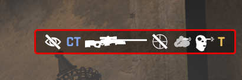

CSGO RushB中文网
CSGO RushB中文网
反恐精英：全球攻势（CS:GO）2020年5月5日更新补丁大小77MB，主要内容为更新了添加了新的击杀图标、以及科洛林与炼狱小镇地图等。
新游戏版本为：1.37.5.0
游戏
添加了致盲击杀、穿烟击杀以及不开镜击杀。若同时有以上效果会显示在同一行。

当无敌时间设置为负值时，即使在热身期间，复活玩家也不会有无敌。
1v1热身竞技场完全禁用无敌时间，并添加了逻辑以在每次热身时刷新血迹。
如果客户端存加载与游戏服务器文件系统中不存在的资产文件，将会被sv_pure服务器踢出。
界面
修复了显示玩家准星的设置问题。
修复了导入准星代码导入被某些语言截断的问题。
修复了准星代码存储超出范围的错误值。
杂项
更新了G3SG1人物持枪姿势，另外向购买菜单中T角色传授了更好的AUG持枪动作。
为了迎合外面晴朗的天气，主菜单界面的背景动画已改为NUKE。
添加了从Steam商店购买优惠项目的功能。
如果游戏语言设置为希腊语，官博内容也会同步显示。
修复了有时在蹲伏行走或飞天模式下监听主机相关错误。
启用了小鸡动画平滑过度。
升级了国服版部分探员的语音路线。
优化了办公室T角色的纹理。更正：优化了炼狱小镇T角色的纹理。（某E你看到了吗？）
多个稳定性修复。
地图
科洛林
- 调整了环境光使其边蓝
- A点下包区域更大
- 修复了A点会卡住C4的点位
- 移除了A点上层的竹墙
- T进攻A路添加了竹墙，并移动了石柱减少间隙
- A点上层石头附近添加了竹墙，以切断CT口查看A门视野
- CT出生点至A点隧道添加了光源
- CT出生点至A点隧道添加了竹墙，以提高可见性
- 调整了隧道纹理
- B点2层添加了光源
- 调整了河道纹理
- 添加了T中路掩体
- 删除了警中至A点对枪位置
- 修复了B点空气墙
- B点灯光更亮
- 修复了CT出生点附近楼梯透视问题
- 修复了B点木门会卡住人的错误
- B点添加了竹墙
- CT出生点河道移除了水
- 调整了天空盒，减少了紫色
- 在热门位置添加了竹墙以提高探员辨识度
- 移除了部分地方树叶模型
- 优化
- 更新了雷达
炼狱小镇
- 添加了1v1热身竞技场
官博以外内容
国服添加了新的防沉迷系统，若超过游戏时间，游戏会提示：
已达到时间限制
您受到“防沉迷系统”的限制，剩余游戏时间为XX
您受到“防沉迷系统”的限制，且已达到游戏时间限制。请休息一下，明天再来。
您受到“防沉迷系统”的限制，且已达到今日游戏时间限制。您必须现在退出游戏，休息一下，明天再来。